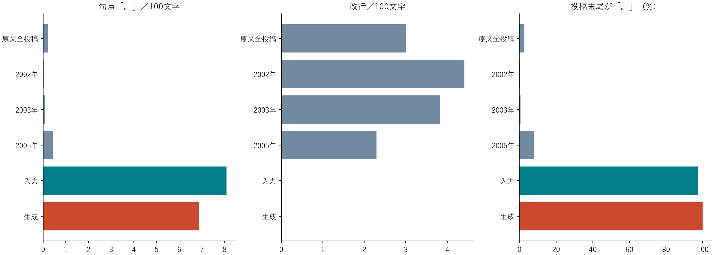
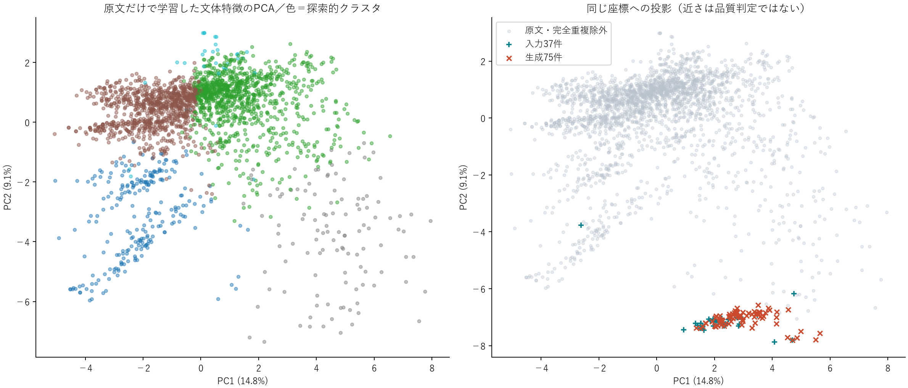
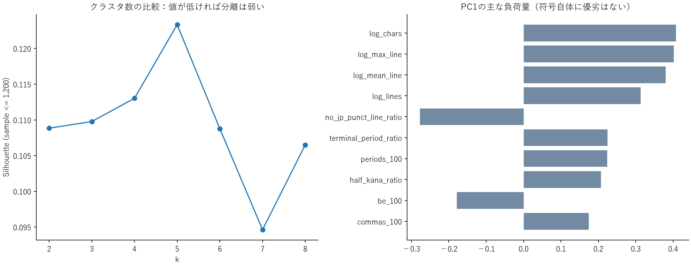
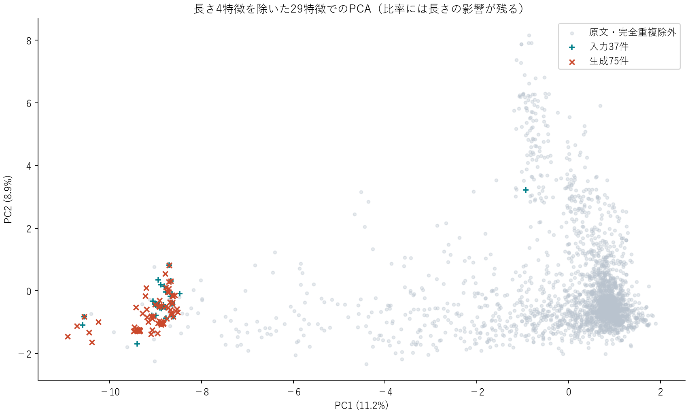

原文を全件集計し、原文だけで作った特徴空間に入力・生成文を投影。本人認定・自然さの合格判定ではありません。
結論：語句の置換では、原文の改行と文のつながりを再現できていません。原文の82.6%には「。」「、」がない一方、保存済み生成75件は全件が句点で終わります。入力と生成で句読点・改行の並びが75/75件そのままでした。
「んだが」の直後が「。」になる文字列は原文199例中2例、生成25例中25例。原文の多くは、ここで次の節や次の行に続いています。終助詞風に置換して句点を残す処理に、具体的なずれがあります。
元ログSHA-256: 983ba86ddf086d7bc842d91c66a4bc1bab940c126682b436538d5df7a68df752
{
"line_segments": 16311,
"physical_lines": 16310,
"categories": {
"section_title": 137,
"blank": 4474,
"post_header": 2407,
"body": 8282,
"anchor": 892,
"quoted_line": 114,
"embedded_quote_header": 4,
"editorial_note": 1
},
"posts": 2407,
"exact_unique_posts": 2363,
"flagged_source_posts": 7
}投稿ヘッダ2,407件のうち、空の投稿と返信番号のみの投稿を除いた2,405件を解析。完全重複をまとめた2,363件から特徴空間を作りました。全体は複数話者の収録で真作ラベルは未検証。初期投稿、模倣、引用を含みます。引用ヘッダは5702・11033・12238・15647行を確認して分離。「天晶暦968」の2投稿は西暦不明として保存しています。

生成文の句読点・改行の並びが入力と同じ: 75/75。文字が増えて100文字あたりの句点が減っても、構成が改善したことにはなりません。
| 集計層 | 投稿数 | 文字数中央値 | 句点/100字 | 読点/100字 | 改行/100字 | 句読点なし投稿% | 末尾句点% |
|---|---|---|---|---|---|---|---|
| all_raw_posts | 2405 | 49.0 | 0.24 | 0.36 | 3.00 | 82.6 | 2.7 |
| unique_raw_posts | 2363 | 50.0 | 0.24 | 0.37 | 2.95 | 82.4 | 2.8 |
| narration_only | 2401 | 49.0 | 0.23 | 0.34 | 3.08 | 83.1 | 2.7 |
| archived_posts | 2452 | 51.0 | 0.22 | 0.34 | 3.30 | 83.4 | 2.6 |
| inputs | 37 | 11.0 | 8.08 | 0.44 | 0.00 | 2.7 | 97.3 |
| generated | 75 | 13.0 | 6.88 | 0.53 | 0.00 | 0.0 | 100.0 |
| year_2001 | 2 | 11.0 | 0.00 | 0.00 | 0.00 | 100.0 | 0.0 |
| year_2002 | 916 | 23.0 | 0.04 | 0.11 | 4.42 | 96.7 | 0.2 |
| year_2003 | 675 | 65.0 | 0.08 | 0.34 | 3.83 | 84.3 | 0.6 |
| year_2004 | 148 | 107.0 | 0.08 | 0.28 | 2.67 | 80.4 | 0.7 |
| year_2005 | 411 | 122.0 | 0.42 | 0.63 | 2.30 | 56.4 | 7.8 |
| year_2006 | 125 | 133.0 | 0.21 | 0.07 | 2.48 | 73.6 | 15.2 |
| year_2007 | 46 | 80.5 | 0.69 | 0.30 | 1.99 | 60.9 | 10.9 |
| year_2008 | 47 | 122.0 | 0.31 | 0.24 | 2.17 | 61.7 | 6.4 |
| year_2009 | 30 | 18.5 | 0.12 | 0.04 | 2.20 | 93.3 | 0.0 |
| year_2010 | 3 | 266.0 | 0.00 | 0.09 | 3.00 | 66.7 | 0.0 |
| year_non_gregorian | 2 | 335.5 | 0.45 | 0.89 | 1.79 | 0.0 | 0.0 |
| chars_1_39 | 1019 | 21.0 | 0.06 | 0.18 | 3.44 | 95.6 | 0.8 |
| chars_40_99 | 723 | 63.0 | 0.13 | 0.24 | 3.47 | 84.0 | 2.2 |
| chars_100_249 | 504 | 140.0 | 0.23 | 0.35 | 3.22 | 66.1 | 4.6 |
| chars_250_99999 | 159 | 341.0 | 0.39 | 0.54 | 2.21 | 45.9 | 11.9 |
| without_flagged_sections | 2398 | 49.0 | 0.23 | 0.37 | 3.01 | 82.7 | 2.7 |
| reference_lines_12990_13006 | 2 | 379.0 | 0.00 | 0.13 | 1.45 | 50.0 | 0.0 |
| reference_lines_13773_13799 | 2 | 175.0 | 0.00 | 0.00 | 2.86 | 100.0 | 0.0 |
| reference_lines_15000_15021 | 2 | 682.5 | 1.03 | 1.03 | 1.17 | 0.0 | 100.0 |


最初の2軸が説明する分散は23.9%。PC1と文字数の順位相関は0.913で、長さの影響が強い図です。5クラスタのシルエット平均は0.123と分離が弱く、「本物度の5段階」にはできません。初期値を変えた一致度は高いものの、長さ4特徴を外すとARIは0.324まで変わります。

文字数・行数・平均行長・最大行長を除いた29特徴でも再計算しました。比率特徴にはなお長さの影響が残るため、長さの完全な補正ではありません。
33個の構造・表記・機能表現の特徴。原文の99パーセンタイルで上側をクリップし標準化。PCAは元の全特徴で実行、クラスタは2次元図ではなく全標準化特徴で推定。K=2〜8、乱数3種、各10初期値。語彙TF-IDFには別途TruncatedSVD（PCAとは別）を使用。
{
"selected_k": 5,
"trials": [
{
"k": 2,
"silhouette_mean": 0.10883621364748064,
"silhouette_seeds": [
0.10876946618798618,
0.10876946618798618,
0.10896970856646956
],
"stability_ari": 0.9966173394475591
},
{
"k": 3,
"silhouette_mean": 0.10976828403513235,
"silhouette_seeds": [
0.10981817707122334,
0.11127279079391021,
0.1082138842402635
],
"stability_ari": 0.9333554117395364
},
{
"k": 4,
"silhouette_mean": 0.11301955740722502,
"silhouette_seeds": [
0.11378262494380678,
0.11263802363893415,
0.11263802363893415
],
"stability_ari": 0.9729528303228289
},
{
"k": 5,
"silhouette_mean": 0.1233294321262541,
"silhouette_seeds": [
0.12333676900045587,
0.1233257636891532,
0.1233257636891532
],
"stability_ari": 0.9943015234727336
},
{
"k": 6,
"silhouette_mean": 0.10875766949912465,
"silhouette_seeds": [
0.11898005809159828,
0.10364647520288785,
0.10364647520288785
],
"stability_ari": 0.6736504966431683
},
{
"k": 7,
"silhouette_mean": 0.09462760427298784,
"silhouette_seeds": [
0.09070407301323925,
0.10060672700369414,
0.09257201280203017
],
"stability_ari": 0.5230457490884841
},
{
"k": 8,
"silhouette_mean": 0.10649999876693166,
"silhouette_seeds": [
0.08784647045279419,
0.10935467857829742,
0.12229884726970337
],
"stability_ari": 0.5303534674430951
}
],
"no_explicit_length_ari": 0.3241847022324764,
"no_clipping_ari": 0.8938291521578832
}question_100: +2.38, be_100: +2.23, no_stop_line_ratio: -2.01, log_lines: -0.99, log_chars: -0.89, log_max_line: -0.62, katakana_ratio: +0.58, newline_100: -0.47
まだ言ってるのかよ タイマンの不良の意味を知らないべ？
ロトさん強すぎだよな これでゼータツー乗ったら最強だべ？
ダークってのは黒くて悪って意味だべな？
log_chars: +0.77, log_max_line: +0.72, log_mean_line: +0.66, log_lines: +0.62, be_100: -0.34, quotative_100: +0.31, parenthesis_100: +0.27, second_person_100: -0.26
調子こき過ぎリアルで痛い目を見たくないならそれ以上は言わない方が吉 俺はブロントじゃないしブロントはそんなふざけたナイトじゃない 誇りを持ってナイトしてるナイトは全員高いＰｽｷﾙを所持している これはどんなＬＳに入っていても手に入らない神様の贈り物だから一般人は諦めたほうがいいだろう
ナイトメアソードは強い ここで微妙だのいってる奴等は欲しいのにLSがしょぼくて取れないだけの雑魚 本当は羨ましいのに人の武器をけなして価値を下げ様としてるのは 一人のナイトとして許せない行為 一般人には手に入らない武器だから正直に羨ましいと言えば見せてやっても良い
揚げ足取るバカがいきなり現れたな おれは自分の名前を１度も言ったことはないからそうこにはならない フレ♀はリアル♀ダと本人から聞いたんだから間違いないと言っている 利用しようとしてるならわざわざ土のクリスタルや羊の皮は送ってこない
log_chars: -0.75, log_max_line: -0.74, log_mean_line: -0.73, log_lines: -0.55, no_stop_line_ratio: +0.45, question_100: -0.36, no_jp_punct_line_ratio: +0.35, second_person_100: +0.30
風って英語でなんていうか教えろ パンチの技が作れない
ロトさん叩いてる奴は自作自演だろ ばれてるんだよ馬鹿
おまえらロトさん馬鹿にしてると死ぬぞ ロトさんは喧嘩が最強に強いからよ
terminal_period_ratio: +3.96, periods_100: +3.93, no_jp_punct_line_ratio: -2.88, no_stop_line_ratio: -1.59, log_max_line: +0.95, log_mean_line: +0.93, log_chars: +0.92, commas_100: +0.90
あー、それとヤメルヤメル言うやつは勝手にやめれば良いよ 誰も残ってくれなんて言ってないから。各ジョブやるのは本当にそのジョブが好きな奴だけで良い。 強化云々でやめる止めない言う奴はさっさと止めてくれた方が鯖も軽くなってくれるし楽
あの判断力の高さはＰスキルの塊だと思ったぞ。 でも正義感が強いから妬みとか嫉妬とかの対象になりやすいからかわいそうだよな 普通の奴だったら多分素材狩りの人が死ぬの見てるだけだろうな。 それにチョコボから降りて助けてくれたしな。ここで死体の近く掘ったとか言うだけで騒いでる奴はただのバカにしか見えないな
最初から真面目な話をしてるんだが？お前は空気をよめないのか？ ここにオモシロ半分で書きこんでる奴はリアルでも相手にされないくらい空気読めないんだろうな。 ここにいるのはﾈｶﾞｷｬﾝで侍強化を狙うｶｽと正しい意見を言う常識人だけ。 お前みたいな空気読めないやつがまだいた事に驚いたからお前がもうくんなよ。。 それとも侍の言い分、俺への文句が俺によって破壊されたから俺を追い出そうとしての粘着かな、読まれてるからへたな策はしないほうがいい
space_100: +8.09, digit_ratio: +4.06, hiragana_ratio: -3.00, newline_100: +1.56, latin_ratio: +1.55, log_lines: +1.29, katakana_ratio: +0.86, log_mean_line: -0.54
ロト（生身） HP：８０００ EN：５００ 装甲：１０００ 運動性：３５０ 限 界 ：１０００ 移動力： １０ サイズ ： S 地形適応：陸/S 水中/S 空/S 宇宙/S パンチ[P] 1000 １～３ キック[P] 1100 １～４ サンダーキック[P] 1500 １～５ ダークアタック[P] 1800 １ ロトの剣[P] 2500 １～２ 回転ソード斬りアタック 3200 １～８ ギガトンパンチ[P] 4000 １～２ メガトンパンチ[P] 5000 １～３ ギガスラッシュ 6500 １～１０
王者の剣 Ｄ120 隔200 Lv30～ ナ スーパーソード Ｄ170 隔250 Lv40～ ナ ロトの剣 Ｄ250 隔280 Lv50～ ナ
ゼータ２（ロト） 修理費 １００００００ ＨＰ ９００００/９００００ サイズ Ｍ ＥＮ １０００/１０００ 移動力 １２ 運動性 ６５０ 装甲 ３５００ 移動 空Ｓ 陸Ｓ 海Ｓ 宇Ｓ 地Ｓ 限界 ２０００ 地形 空Ｓ 陸Ｓ 海Ｓ 宇Ｓ 地Ｓ
文字2〜4-gram TF-IDF、最大12,000特徴、min_df=2。raw、文字種マスク、句読点・空白除去の3空間。生成できた入力ごとに候補を平均してから比較。区間は32入力の記述的ブートストラップで、未知入力への性能保証ではありません。
{
"lexical": {
"generated_inputs": 32,
"input_mean": 0.0347357278395575,
"generated_mean": 0.06915473564322934,
"paired_delta": 0.03441900780367184,
"descriptive_bootstrap_95": [
0.02828343959633642,
0.04067529181192877
]
},
"script_masked": {
"generated_inputs": 32,
"input_mean": 0.3701098182414926,
"generated_mean": 0.47348565185912606,
"paired_delta": 0.10337583361763346,
"descriptive_bootstrap_95": [
0.07961297817207441,
0.12880605062221673
]
},
"without_punctuation": {
"generated_inputs": 32,
"input_mean": 0.040939771516536376,
"generated_mean": 0.07356099751871653,
"paired_delta": 0.032621226002180155,
"descriptive_bootstrap_95": [
0.02573204774307265,
0.04001433586646858
]
}
}元の入力から生成文への平均コサインは上がりました。しかし、句読点を除いた空間でも上がるため、句読点が改善した証拠にはなりません。語彙空間の群と文体特徴の群の一致度はARI 0.184。語彙ではロト・侍・グラットンなどの話題が強く分かれます。この結果と、以前の別コーパス・別特徴数の点数は直接比較できません。
形態素による語尾認定ではなく文字列の全出現です。「からな」には「わからない」なども含まれるため、語尾の使用率とは解釈しません。
[
{
"expression": "んだが",
"group": "original",
"counts": {
"comma": 6,
"question_exclaim": 31,
"continuation": 113,
"end_of_post": 6,
"newline": 41,
"period": 2
},
"scope": "literal substring, not a morphological ending label; からな includes わからない"
},
{
"expression": "んだが",
"group": "generated",
"counts": {
"period": 25
},
"scope": "literal substring, not a morphological ending label; からな includes わからない"
},
{
"expression": "からな",
"group": "original",
"counts": {
"end_of_post": 31,
"continuation": 102,
"newline": 51,
"comma": 7,
"period": 3
},
"scope": "literal substring, not a morphological ending label; からな includes わからない"
},
{
"expression": "からな",
"group": "generated",
"counts": {
"period": 30
},
"scope": "literal substring, not a morphological ending label; からな includes わからない"
},
{
"expression": "ここ大事",
"group": "original",
"counts": {},
"scope": "literal substring, not a morphological ending label; からな includes わからない"
},
{
"expression": "ここ大事",
"group": "generated",
"counts": {},
"scope": "literal substring, not a morphological ending label; からな includes わからない"
}
]